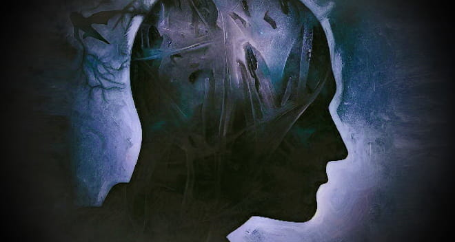

La danza de las mentes manipuladas

En el oscuro rincón de la mente perdida,
donde el fuego de la verdad se apaga,
surgen marionetas de palabras susurradas,
tejiendo su red en la mente manipulada.
Con hilos invisibles, sutiles y fuertes,
tejen mentiras y promesas en las mentes inertes,
controlando deseos, pensamientos y actos,
en el juego macabro de la manipulación.
La manipulación se enmascara en sonrisas,
y palabras dulces que encandilan y embrujan,
pero tras ellas yace un mar de engaño,
que aprisiona al inocente en su veneno dañino.
Como títeres danzantes, cautivos y ciegos,
caminamos al compás de su melodía triste,
sumidos en pensamientos oscuros y profundos,
que nos alejan de la realidad y nos corrompen.
Pero hay una fortaleza en las mentes cautivas,
una luz que brilla en lo más profundo del ser,
una fuerza que se alza ante la manipulación,
rompiendo las cadenas, liberándonos del control.
Abre tus ojos y escucha tu voz interior,
no te dejes arrastrar por las sombras del engaño,
mantén tu mente clara y tu espíritu fuerte,
y la manipulación no podrá dañarte ni vencerte.
El poder de la verdad y el amor verdadero,
son armaduras que nos protegen del falso encanto,
y con ellas, en la danza de las mentes libres,
construiremos un mundo sin manipulación ni dolor.